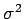
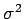
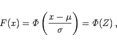

Inhalt Index DeskTop Bronstein

 Wahrscheinlichkeitsrechnung und Mathematische Statistik Mathematische Statistik Wichtige Prüfverfahren Prüfen auf Normalverteilung
Wahrscheinlichkeitsrechnung und Mathematische Statistik Mathematische Statistik Wichtige Prüfverfahren Prüfen auf Normalverteilung


In einem rechtwinkligen Koordinatensystem ist die x-Achse gleichabständig unterteilt, während die y-Achse die folgende Skala darstellt: Sie ist gleichabständig bezüglich Z unterteilt, wird aber mit
| (16.133) |
beziffert. Falls eine Zufallsgröße X einer Normalverteilung mit Mittelwert  und Streuung  genügt, dann gilt für ihre Verteilungsfunktion
und Streuung  genügt, dann gilt für ihre Verteilungsfunktion
|  | (16.134a) |
d.h., es muß
gelten und damit ein linearer Zusammenhang zwischen x und Z bestehen. Aus der Substitution (16.135b) liest man außerdem die folgende Zuordnung ab:
| Z | x |
| 0 | |
| 1 | |
| -1 |
Entnimmt man einer normalverteilten Grundgesamtheit eine Stichprobe, berechnet deren relative Summationshäufigkeiten gemäß (16.129) und trägt diese in das Wahrscheinlichkeitspapier als Ordinaten zu den entsprechenden oberen Klassengrenzen als Abszissen ein, dann liegen diese Punkte annähernd (bis auf zufällige Abweichungen) auf einer Geraden (s. Abbildung).
Aus der Abbildung ist ersichtlich, daß für das zu Grunde liegende Beispiel eine Normalverteilung angenommen werden kann. Außerdem liest man ab: .
Hinweis: Die Werte Fi der relativen Summenhäufigkeiten lassen sich einfacher in das Wahrscheinlichkeitspapier eintragen, wenn dessen Bezifferung der Ordinate bezüglich y gleichabständig ist, was ungleichabständige Ordinaten zur Folge hat.